Nsp Oec Training Chapter 6
National Ski Patrol - Outdoor Emergency Care chapter 6

Chapter 6: Anatomy & Physiology
- Identify and properly use each anatomic term for body direction, movement, and position.
- Identify the location and function of each of the body's organs.
- Describe the anatomy (structure) and physiology (functioning) of each body system.
- Explain how blood flows through the heart.
- Explain how tissue in the body gets oxygen and nourishment.
- Name and describe the location of the major bones in the body.
- Define and explain the three types of muscles.
6.1. Identify and properly use each anatomic term for body direction, movement, and position.
Here’s a brief overview of key anatomic terms for body direction, movement, and position, along with examples of their proper use:
Body Direction:
- Anterior (Ventral): Toward the front of the body. Example: The sternum is anterior to the heart.
- Posterior (Dorsal): Toward the back of the body. Example: The spine is posterior to the stomach.
- Superior (Cranial): Toward the head or above. Example: The head is superior to the neck.
- Inferior (Caudal): Toward the feet or below. Example: The feet are inferior to the knees.
- Medial: Toward the midline of the body. Example: The nose is medial to the eyes.
- Lateral: Away from the midline of the body. Example: The arms are lateral to the chest.
- Proximal: Closer to the point of attachment to the body. Example: The elbow is proximal to the wrist.
- Distal: Farther from the point of attachment to the body. Example: The fingers are distal to the elbow.
Body Movement:
- Flexion: Decreasing the angle between two body parts. Example: Bending the elbow is flexion of the forearm.
- Extension: Increasing the angle between two body parts. Example: Straightening the knee is extension of the leg.
- Abduction: Moving a body part away from the midline. Example: Raising the arm sideways is abduction.
- Adduction: Moving a body part toward the midline. Example: Bringing the arm back to the body is adduction.
- Rotation: Turning a body part around its axis. Example: Turning the head to the left or right is rotation.
- Pronation: Rotating the forearm so the palm faces down. Example: Turning the palm downward is pronation.
- Supination: Rotating the forearm so the palm faces up. Example: Turning the palm upward is supination.
Body Position:
- Supine: Lying on the back, face up. Example: The patient is placed in a supine position for the exam.
- Prone: Lying on the stomach, face down. Example: The patient is in a prone position during certain back surgeries.
- Lateral (Side-Lying): Lying on one side. Example: The recovery position places the patient in a lateral position.
- Fowler’s Position: Sitting upright or inclined at an angle. Example: A patient with breathing difficulty is placed in Fowler's position.
These terms are used in anatomy and medical settings to describe locations, movements, and positions accurately.
2. Human body’s major organs, their location, and their function:
- Heart: Located in the chest, between the lungs. It pumps blood throughout the body, supplying oxygen and nutrients while removing carbon dioxide and waste.
- Lungs: Located on either side of the chest. They exchange oxygen from the air with carbon dioxide from the blood.
- Brain: Located in the skull. It controls all body functions, including movement, thought, emotions, and sensory processing.
- Liver: Located in the upper right abdomen. It processes nutrients, detoxifies harmful substances, and produces bile for digestion.
- Stomach: Located in the upper abdomen, just below the ribs. It breaks down food using digestive acids and enzymes.
- Pancreas: Located behind the stomach. It produces digestive enzymes and regulates blood sugar by releasing insulin and glucagon.
- Kidneys: Located in the lower back, one on each side of the spine. They filter waste from the blood, regulate fluid balance, and produce urine.
- Small Intestine: Located in the abdomen. It digests food and absorbs nutrients into the bloodstream.
- Large Intestine: Located in the abdomen, surrounding the small intestine. It absorbs water and forms solid waste (stool).
- Spleen: Located in the upper left abdomen. It filters blood, recycles old red blood cells, and helps the immune system.
- Gallbladder: Located under the liver. It stores bile produced by the liver and releases it into the small intestine to aid in fat digestion.
- Bladder: Located in the pelvis. It stores urine until it is expelled from the body.
- Esophagus: Located in the chest, connecting the throat to the stomach. It carries food and liquids from the mouth to the stomach.
- Thyroid: Located in the neck. It regulates metabolism, energy production, and growth through hormone production.
- Adrenal Glands: Located on top of each kidney. They produce hormones like adrenaline and cortisol that regulate metabolism, stress response, and blood pressure.
- Skin: Covers the entire body. It acts as a protective barrier, regulates temperature, and allows sensation.
- Bones: Located throughout the body. They provide structural support, protect organs, and enable movement through muscle attachment.
- Muscles: Located throughout the body. They enable movement, posture, and generate heat by contracting.
- Uterus (female): Located in the pelvis. It supports the development of a fetus during pregnancy.
- Prostate (male): Located below the bladder. It produces fluid that nourishes and protects sperm in semen.
3. Systems in the Human Body:
- Cardiovascular System: Circulates blood throughout the body, delivering oxygen and nutrients to tissues and removing waste products.
- Digestive System: Breaks down food into nutrients that can be absorbed and used by the body for energy, growth, and repair.
- Integumentary System: Protects the body from environmental damage through the skin, hair, and nails, while regulating temperature and sensory perception.
- Nervous System: Controls and coordinates body activities by transmitting signals between different body parts through the brain, spinal cord, and nerves.
- Skeletal System: Provides structural support, protects internal organs, facilitates movement, and produces blood cells within bone marrow.
- Muscular System: Allows movement of the body and its parts through the contraction and relaxation of muscles while also maintaining posture and generating heat.
- Respiratory System: Facilitates the exchange of oxygen and carbon dioxide between the body and the environment through the lungs and airways.
- Endocrine System: Produces and releases hormones that regulate metabolism, growth, reproduction, and other bodily functions.
- Lymphatic (and Immune) System: Defends the body against infections, removes waste and toxins, and transports lymph, a fluid containing infection-fighting white blood cells.
- Urinary (Excretory) System: Filters waste products from the blood and removes them from the body in the form of urine, while also maintaining fluid and electrolyte balance.
- Excretory System: Eliminates metabolic waste products and toxins from the body through processes in the skin, lungs, liver, and kidneys.
- Reproductive System: Enables the production of offspring through the creation and delivery of reproductive cells.
These systems work together to maintain the body's overall homeostasis and functionality.
Human body’s major organs, their location, and their function:
- Heart: Located in the chest, between the lungs. It pumps blood throughout the body, supplying oxygen and nutrients while removing carbon dioxide and waste.
- Lungs: Located on either side of the chest. They exchange oxygen from the air with carbon dioxide from the blood.
- Brain: Located in the skull. It controls all body functions, including movement, thought, emotions, and sensory processing.
- Liver: Located in the upper right abdomen. It processes nutrients, detoxifies harmful substances, and produces bile for digestion.
- Stomach: Located in the upper abdomen, just below the ribs. It breaks down food using digestive acids and enzymes.
- Pancreas: Located behind the stomach. It produces digestive enzymes and regulates blood sugar by releasing insulin and glucagon.
- Kidneys: Located in the lower back, one on each side of the spine. They filter waste from the blood, regulate fluid balance, and produce urine.
- Small Intestine: Located in the abdomen. It digests food and absorbs nutrients into the bloodstream.
- Large Intestine: Located in the abdomen, surrounding the small intestine. It absorbs water and forms solid waste (stool).
- Spleen: Located in the upper left abdomen. It filters blood, recycles old red blood cells, and helps the immune system.
- Gallbladder: Located under the liver. It stores bile produced by the liver and releases it into the small intestine to aid in fat digestion.
- Bladder: Located in the pelvis. It stores urine until it is expelled from the body.
- Esophagus: Located in the chest, connecting the throat to the stomach. It carries food and liquids from the mouth to the stomach.
- Thyroid: Located in the neck. It regulates metabolism, energy production, and growth through hormone production.
- Adrenal Glands: Located on top of each kidney. They produce hormones like adrenaline and cortisol that regulate metabolism, stress response, and blood pressure.
- Skin: Covers the entire body. It acts as a protective barrier, regulates temperature, and allows sensation.
- Bones: Located throughout the body. They provide structural support, protect organs, and enable movement through muscle attachment.
- Muscles: Located throughout the body. They enable movement, posture, and generate heat by contracting.
- Uterus (female): Located in the pelvis. It supports the development of a fetus during pregnancy.
- Prostate (male): Located below the bladder. It produces fluid that nourishes and protects sperm in semen.
These organs work together to maintain vital bodily functions.
How Blood flows through the heart :
- Blood enters the heart through the superior and inferior vena cava.
- Deoxygenated blood flows into the right atrium.
- The right atrium contracts, pushing blood through the tricuspid valve into the right ventricle.
- The right ventricle contracts, sending blood through the pulmonary valve into the pulmonary arteries.
- Blood travels to the lungs, where it picks up oxygen and releases carbon dioxide.
- Oxygenated blood returns to the heart through the pulmonary veins into the left atrium.
- The left atrium contracts, pushing blood through the mitral (bicuspid) valve into the left ventricle.
- The left ventricle contracts, sending oxygenated blood through the aortic valve into the aorta.
- Blood is distributed to the rest of the body through the aorta, delivering oxygen to tissues.
Major bones in the body, along with their location:
- Skull: Located in the head, it protects the brain and forms the structure of the face.
- Mandible: The lower jawbone, located in the face, responsible for mouth movement.
- Clavicle (Collarbone): Located between the shoulder blade and the sternum (breastbone), it helps support shoulder movement.
- Sternum (Breastbone): Located in the center of the chest, it connects the ribs and helps protect the heart and lungs.
- Ribs: Located in the chest, these bones form the rib cage, which protects the heart, lungs, and other internal organs.
- Humerus: The upper arm bone, located between the shoulder and elbow.
- Radius: One of the two forearm bones, located on the thumb side of the forearm.
- Ulna: The second forearm bone, located on the pinky side of the forearm.
- Spine (Vertebrae): A column of bones located in the back, stretching from the neck to the lower back, protecting the spinal cord.
- Pelvis: Located in the lower torso, it supports the weight of the upper body and protects organs in the lower abdomen.
- Femur: The thigh bone, located between the hip and knee, is the longest and strongest bone in the body.
- Patella (Kneecap): Located in the front of the knee joint, it protects the knee and assists with leg extension.
- Tibia (Shinbone): The larger, weight-bearing bone of the lower leg, located between the knee and ankle.
- Fibula: The smaller bone of the lower leg, located alongside the tibia, providing stability to the ankle.
- Carpals: A group of small bones located in the wrist.
- Metacarpals: The bones located in the hand, between the wrist and fingers.
- Phalanges: The bones in the fingers and toes.
- Tarsals: A group of bones located in the ankle and foot.
- Metatarsals: The bones located in the foot, between the ankle and toes.
- Scapula (Shoulder Blade): Located in the upper back, it connects the humerus with the clavicle and supports arm movement.
These major bones form the structure of the body and provide protection to vital organs.
Three Types of Muscles:
- Skeletal Muscle: Voluntary muscles attached to bones, responsible for body movement by contracting and pulling on the skeleton.
- Cardiac Muscle: Involuntary muscle found only in the heart, responsible for pumping blood through the circulatory system with rhythmic contractions.
- Smooth Muscle: Involuntary muscle found in the walls of internal organs (e.g., intestines, blood vessels), responsible for regulating movements like digestion and blood flow by contracting slowly and steadily.
Getting Started
The goal of this solution is to Jump Start your development and have you up and running in 30 minutes.
To get started with the Nsp Oec Training Chapter 6 solution repository, follow these steps:
1. Clone the repository to your local machine.
2. Install the required dependencies listed at the top of the notebook.
3. Explore the example code provided in the repository and experiment.
4. Run the notebook and make it your own - EASY !
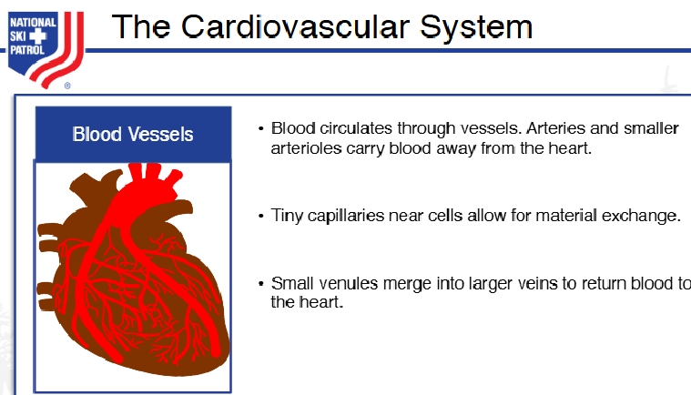
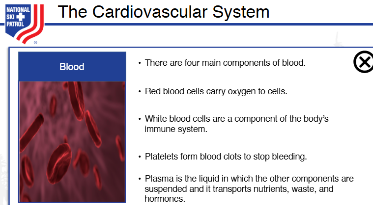
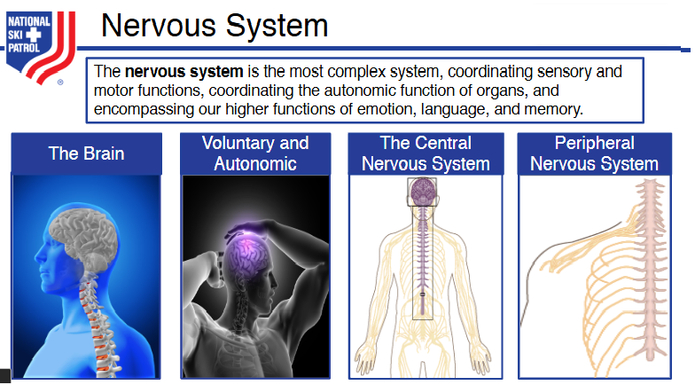
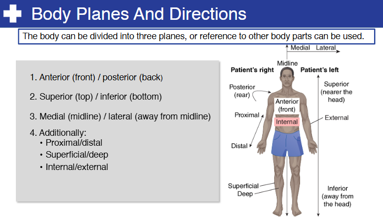
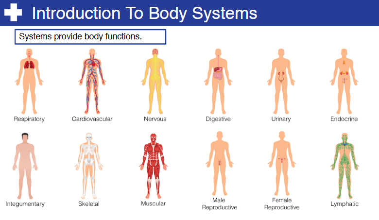
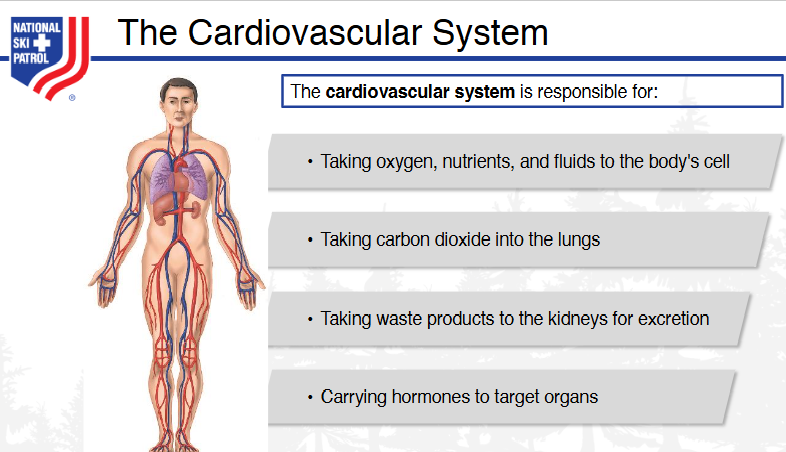
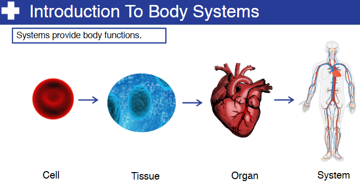
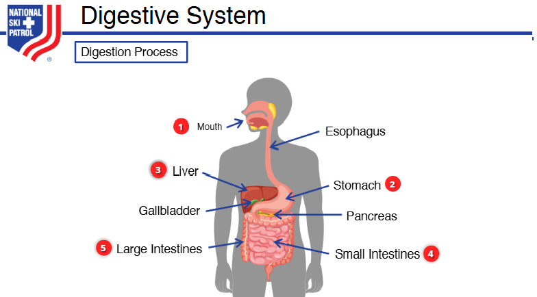
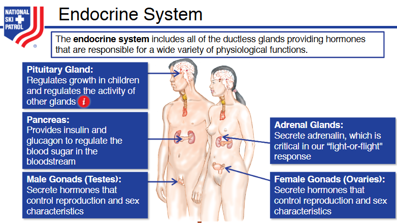
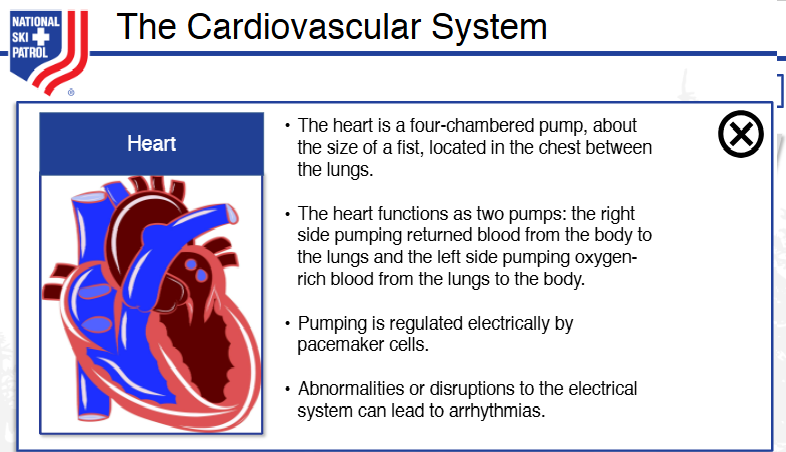

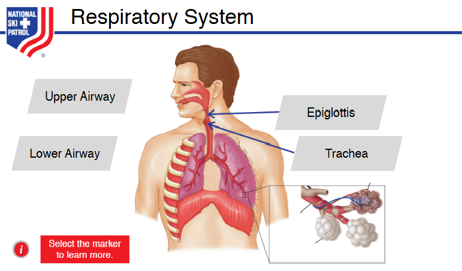
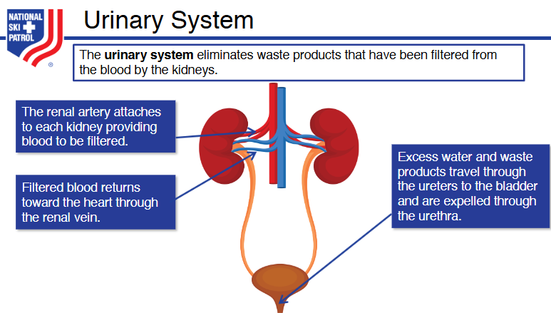
Github https://github.com/JoeEberle/ - Email josepheberle@outlook.com